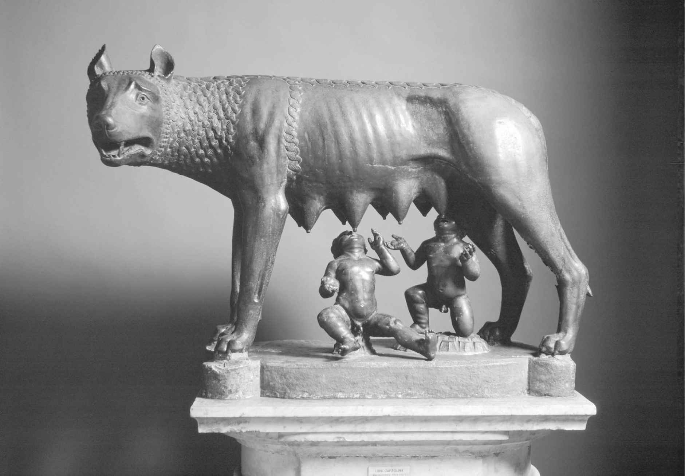
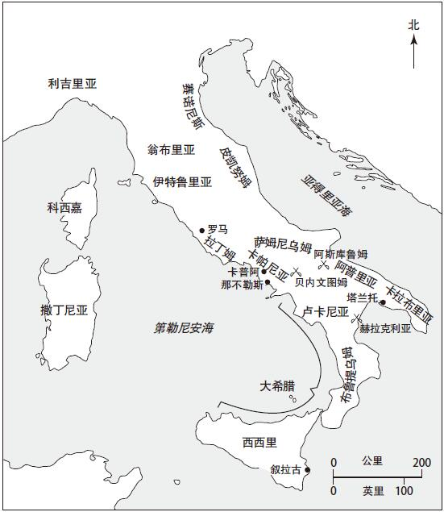

根据传说，罗马历史起源于特洛伊城的陷落。当希腊士兵从木马中蜂拥而出，结束十年特洛伊战争之际，特洛伊王子埃涅阿斯将烟火弥漫下的城内最后一批幸存者聚集在一起。在他的带领下，特洛伊城的逃亡者们首先抵达了北非迦太基，从那里又到了意大利，最终在拉丁姆平原定居下来。然而，事实上，爱神维纳斯之子埃涅阿斯并非罗马城的真正建立者。但他的儿子尤鲁斯·阿斯卡尼乌斯成了拉丁城市阿尔巴·隆加的国王。他是尤利乌斯家族的祖先，后来的尤利乌斯·凯撒和罗马皇帝奥古斯都就出自这个家族。
尤鲁斯·阿斯卡尼乌斯的后裔统治了阿尔巴·隆加许多世代。此后一个名叫阿穆利乌斯的心怀不满的王子，废掉哥哥努米托尔，篡夺了王位。老国王的儿子悉数被杀，仍是处女之身的女儿瑞娅·西尔维娅则被迫献给灶神维斯塔，成为一名维斯塔祭司。然而，命运之神改变了接下去发生的一切。瑞娅因遭到强暴而产下一对双胞胎男婴，她认为孩子的父亲是战神马尔斯。阿穆利乌斯逼迫瑞娅将婴儿抛至台伯河边。然而，双胞胎兄弟罗慕路斯和雷穆斯靠着吮吸一头母狼的奶汁活了下来，并由一名国王的牧人收养长大。刚成年，兄弟俩就推翻了阿穆利乌斯的统治，恢复了祖父的王位。随后，罗慕路斯和雷穆斯回到台伯河畔当年被遗弃的地方，在附近的帕拉丁山上建立了一个新的部落。然而，兄弟间的不和迅速升温以至白热化。两人都争着要当这个新兴城邦的国王，最后诉诸暴力，雷穆斯被杀。未来将一统地中海世界的罗马城邦就在这鲜血四溅的环境中诞生了。传统观点认为，公元前753年，罗慕路斯以自己的名字命名了他所建立的这座城市，因而成了罗马的第一任国王。

图1 铜铸母狼雕像（可能是伊特鲁里亚人原作），狼身下的婴孩由15世纪的一名教皇添加
城邦创立伊始就面临着尖锐的社会危机。为了促进城市发展，罗慕路斯向所有投奔他的人抛出橄榄枝，这其中既有奴隶和逃犯，也有土匪和强盗。然而，罗马缺乏足够数量的女性来繁衍后代，因此必须找到一个解决方案。罗马人举行了一场浩大的宴会，并邀请了周边部落参加，其中最强大的一支是萨宾族。在一个选定的时刻，罗马的男子们倾巢出动，掳走了他们能抓到的所有年轻的萨宾女性。当萨宾人做好准备发动反击之时，当年被掠走的妇女早已成为罗马人的妻子和母亲。她们挺身而出，隔开双方的兵戈，请求自己的父亲和丈夫达成和解。“劫掠萨宾妇女”为罗马的未来打下根基，并开始将罗马的影响力扩散至周边地区。
根据传统记载，共有七位国王成功统治了罗马近两个半世纪之久，罗慕路斯是第一位王。后来，罗慕路斯在一场暴风雨中神秘地消失了，据说他升入天堂成为奎里努斯神。他的继承人努马·庞皮利乌斯是一名萨宾人，被认为是罗马历法的制定者，并确立了罗马宗教中大部分古老的仪式。相比之下，第三位国王图鲁斯·霍斯提里乌斯是名军人。在其统治期间，祖先建立的阿尔巴·隆加城被罗马人隳坏一空，城中只有少数神庙幸存下来。第四位国王安库斯·马尔西乌斯是努马的孙子。像祖父一样，他的主要贡献也是对公共宗教的修订。同时，他也是一位军人。根据其在位期间订下的仪式，罗马可以以正当的理由参加战争，并打败了周边的拉丁民族。安库斯死后，大权落到卢修斯·塔克文尼乌斯·普利斯库斯手中。此人来自北部的伊特鲁里亚民族。在他统治期间，罗马城的面积，尤其是中心区域得到了拓展。紧邻罗马广场的卡匹托尔山上著名的朱庇特神殿也在他在位期间开始动工。到第六位国王塞尔维乌斯·图利乌斯统治时期，一些市政工程仍在兴建。塞尔维乌斯是塔克文的女婿。在其统治期间，他实施了人口普查，罗马的人口因此得到清点。同时，塞尔维乌斯城墙的修建也让罗马城有了具体的边界。
罗马的第七位也是最后一位国王是卢修斯·塔克文尼乌斯·苏佩布（高傲者塔克文）。他是塔克文尼乌斯·普利斯库斯的儿子，塞尔维乌斯的女婿。塔克文推翻了塞尔维乌斯的统治，攫取了王位。他是一个暴君，靠白色恐怖维持着统治。同时，塔克文无视国王的咨询机构元老院的权威。塔克文的儿子们和父亲性情相仿，正是他们的罪恶吹响了君主制灭亡的号角，同时也拉开了共和国诞生的帷幕。在罗马城外举行的一次宴会上，王子和宾客们吹嘘各自的妻子品行是如何出色。当他们回到家中进行检验之时，王子们发现自己的妻子正享受着安逸奢华的生活。与之相反，他们的朋友科拉提努斯的妻子卢克雷提娅却是女性美德的典范。当抵达他家的时候，人们发现卢克雷提娅正边持纺锤，边指挥家内仆人劳作。她的美貌引发了塔克文小儿子塞克斯图斯·塔克文尼乌斯的欲望。塔克文秘密返回屋中，在武力的胁迫下强奸了她。尽管是无辜的，但内疚促使卢克雷提娅前往父亲和丈夫处请求宽恕。在二人面前，她将一把匕首插入了自己的心脏以示清白。将匕首拔出的那名男子叫卢修斯·尤尼乌斯·布鲁图斯，他就是后来刺杀尤利乌斯·凯撒的那个著名凶手的祖先。布鲁图斯将罗马人召集在一起，流放了塔克文和他的儿子们。公元前510年，罗马君主政体瓦解。国王由两名通过选举产生的执政官取代，他们分别是科拉提努斯和布鲁图斯。罗马共和国就此建立。
这些古罗马传说背后隐藏的真相是什么呢？罗马共和国建立前的文献资料早已杳然无存。特洛伊王子埃涅阿斯的故事因维吉尔（公元前70—前19）的《埃涅阿斯纪》而享有不朽盛名。不过这部史诗是在所谓的特洛伊城陷落一千多年后写成的。有关罗慕路斯以及后面几位国王的历史，我们所拥有的最有价值的资料出自和维吉尔生活于同一时期的另一位作家之手，同样和王政时代相隔甚远。历史学家李维（公元前59—公元17）创作了长达142卷的《建城以来史》，他以卢克雷提娅遭强暴和塔克文家族被驱逐这两个故事作为第一卷的结尾。维吉尔和李维见证了罗马共和国灭亡和首位皇帝奥古斯都（公元前31—公元14）的崛起。对王政衰落前的远古时代，很难说这些作品提供的记载是准确无误的。
但我们并不能因此否认罗马传统记载的重要性。在生活于晚近时期的罗马人看来，早期罗马处在一个黄金时代。罗马社会的基本结构形成于这一时期，让罗马走向伟大的那些品质也在同一时期得以展现。重要的风俗和事件都和上古时代的那些国王有关，而古代英雄们为如何做一个真正的罗马人树立了榜样。卢克雷提娅的故事为罗马妇女在家内扮演的角色提供了一个标杆，并用生命维护了自身的荣誉。布鲁图斯将罗马从塔克文暴政下解放出来，这激励他的后代密谋策划了反抗凯撒独裁的行动。这些榜样并不只是口头上的理想，他们确实对罗马后代男女的行为产生了影响，同时反映出罗马人自身是如何看待他们的根源的。笼罩在远古迷雾中的这些故事对我们认识罗马共和国起到至关重要的作用，即便它们并不总能对探究罗马历史的起源提供帮助。
由于缺乏可靠的文字资料，研究早期罗马史的当代历史学家们不得不转向其他形式的证据，将第一批罗马人的出现放在其所处的物质和文化环境下考察。罗马坐落在肥沃的拉丁姆平原的中心地带，该平原西临大海。意大利的地形由北部的阿尔卑斯山脉、波河河谷以及亚平宁山脊构成，后者如一根脊椎一样直插至意大利南部。亚平宁山更加陡峭，相比西海岸，其距东海岸更近一些，而意大利中部地区大部分肥沃的土地则偏居西侧。拉丁姆平原可以供养密集的农业人口，但要不时防备来自亚平宁山地民族的侵袭，其中在罗马早期历史上最知名的一支是萨莫奈人。
早在大约公元前1500到前1000年间，后来被称为拉丁人的印欧意大利民族便已移居到拉丁姆平原之上。对这批早期移民来说，罗马是一个天然的定居地。七座环绕起来的山丘能够提供防御性屏障，附近的台伯岛是跨过台伯河的最佳地点。拉丁姆平原北部是伊特鲁里亚。到公元前900年左右，被叫作伊特鲁里亚的民族就已在这一地区生活。约公元前750年后，从希腊世界来的殖民者建造的一系列城邦出现在了拉丁姆以南地区，其中包括西西里的叙拉古和奈阿波利斯（“新城”那不勒斯），因此南部意大利得名“大希腊”（Magna Graecia）。位于意大利中西部地区的拉丁姆处在伊特鲁里亚和大希腊之间陆路沟通的天然交汇点上，为陆上沟通提供便利。文化上的互相交流对罗马早期的发展产生了重要影响。
考古发掘显示，早在青铜时代（公元前1000年之前）罗马地区就有人类存在。帕拉丁山上第一个重要的定居地是于公元前8世纪青铜时代所建的一些木屋。这表明公元前753年这一传统的罗马建城日期或许比我们认为的更加准确。在公元前7世纪，帕拉丁山上的这些最初定居点和其他几座山丘上的定居点联合起来，罗马出现了城市的雏形。我们只能从文献记载中找到导致这一重要发展的某些线索。有关罗马七王传说最为引人注目的一点是两个晚期国王的名字，卢修斯·塔克文尼乌斯·普利斯库斯和卢修斯·塔克文尼乌斯·苏佩布。他们并非拉丁人而是伊特鲁里亚人。从山丘上分散的定居点到罗马城的转变似乎是在伊特鲁里亚人统治时期完成的。

地图1 早期罗马和意大利
谁是伊特鲁里亚人？有关这一问题，学者们争论了数世纪之久。关于伊特鲁里亚人的起源并不是很清楚，但至少到公元前900年，甚至可能在更早的前1200年，他们就已定居在罗马的西北部地区，也就是今天的托斯卡纳。我们迄今已发现数千枚伊特鲁里亚铭文，但令人苦恼的是无人能够解读这些文字，原因是伊特鲁里亚人并不属印欧人种，因此没有与之并列的现存语言进行对比。我们对伊特鲁里亚文化的了解全部来自考古，尤其是伊特鲁里亚城镇周边那些精美的亡者之城（necropoleis ）。华丽的墓穴壁画描绘了宴会、舞蹈和包括角斗比赛在内的体育竞技等场景，组成了伊特鲁里亚葬礼仪式的一部分。这些保留至今的艺术和手工作品受到希腊人文化的强烈影响。而正是通过伊特鲁里亚人，希腊文化第一次被输入罗马。
伊特鲁里亚人对早期罗马产生了深远的影响。罗马（Roma）这个名字可能就是个伊特鲁里亚词（Ruma）。公元前6世纪出现的罗马城是仿照伊特鲁里亚城市建立的。在卡匹托尔山的城市心脏地带坐落着罗马最伟大的神庙，献给以下三位神灵：朱庇特、朱诺和密涅瓦。根据罗马传统记载，这座神庙始建于伊特鲁里亚国王卢修斯·塔克文尼乌斯·普利斯库斯统治时期。卡匹托尔三神让人想起伊特鲁里亚三位一体式的神灵：提尼、乌尼和门弗拉。罗马市政结构也是对典型的伊特鲁里亚城网格结构的模仿，而罗马的房屋同样也是伊特鲁里亚房屋构造的再现：有一个中庭通向宴会厅，从那里又有连接卧室的门。伊特鲁里亚人的建筑设计风格也在罗马身上留下印记。高架渠和桥梁、排水系统以及大量使用的拱门和穹隆都带有伊特鲁里亚风格，这些在后来均成为罗马建筑的典型特征。
伊特鲁里亚文化对罗马的影响并非仅限于物质层面。正如罗马传统所认为的那样，罗马人的一些宗教行为也起源于伊特鲁里亚，其中包括内脏占卜术，即通过观察献祭动物的内脏以求得神灵的旨意。罗马角斗士比赛之所以如此流行可能也是因为受到伊特鲁里亚葬礼表演的影响。代表罗马共和国权威的一些象征之物同样跟伊特鲁里亚有关。比如，李维认为，罗马高级官员所穿的紫色宽边白底托迦长袍以及他们执行公务时所坐的象牙圈椅都和伊特鲁里亚有关。还有“法西斯”（fasces ），这是由一捆木棍中间绑着一把斧头而制成的束棒。它最初由12名侍卫扛着，后者作为国王的扈从和保镖跟随其左右。到了共和国时代，这样的荣誉被授予每名执政官。
到公元前6世纪晚期，伊特鲁里亚人已成为意大利北部和中部地区的一支统治性力量。虽说伊特鲁里亚人影响甚广，罗马却从未成为一个伊特鲁里亚城市。正如罗马人在此后反复表明的那样，能从遭遇的势力中不断吸收和适应而不丧失自身认同，是天才的罗马人所拥有的一个极其重要的天赋。就像几个世纪后的希腊人一样，伊特鲁里亚人对罗马文化所做的贡献厥功甚伟，但最终却臣服在罗马统治之下。伊特鲁里亚国王被逐并未中断伊特鲁里亚对罗马的影响力，但它再一次印证了罗马政治的独立性，同时也标志着罗马开始逐渐壮大起来。共和国的成形完全是罗马自身发展的产物。